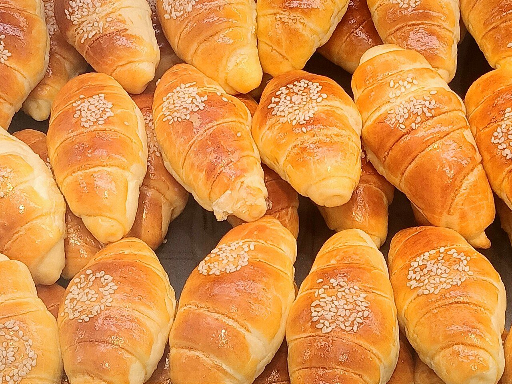
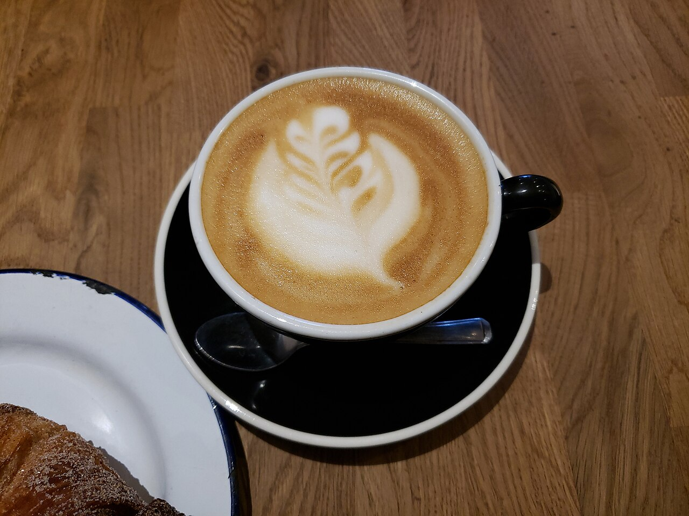
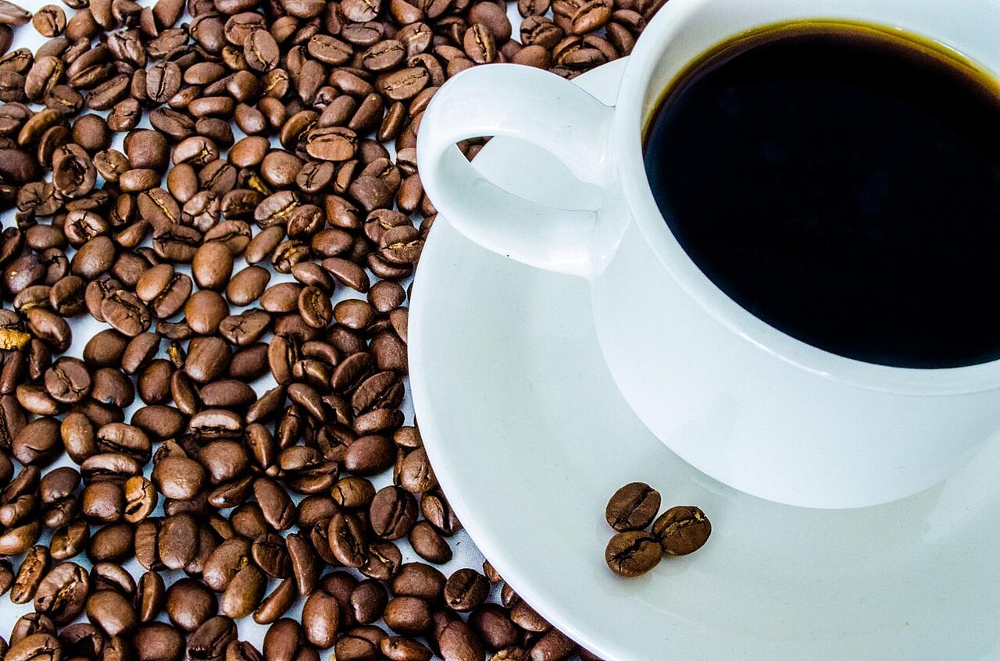
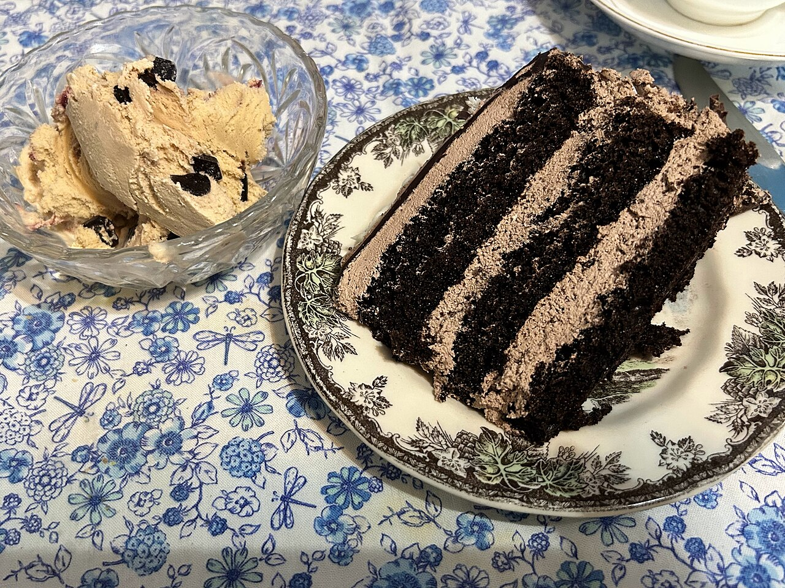

about
お店について
パンの時間と、カフェの時間。ひとつの扉の向こうに、ふたつの過ごし方があります。
ふたつの顔を、ひとつの店に

bakery|パンを選ぶ
ずらりと並ぶパンのなかから、その日の気分で選ぶ。ベーカリーならではの、ささやかな楽しみです。朝ごはんに、おやつに、誰かへの手みやげに。選ぶ時間そのものが、ちょっとした楽しみになります。

cafe|ひと息つく
歩き疲れたとき、少し時間があいたとき。カフェのある場所は、いつもの一日にやさしい余白をつくってくれます。パンとあわせて、自分のペースで過ごすひとときをイメージしています。
席数・ご利用方法・提供内容は、ご来店前に店舗へご確認ください。
宮崎市宮田町で
店舗は宮崎市宮田町にあります(〒880-0804 宮崎県宮崎市宮田町4-4)。南国・宮崎のあかるい空気のなかで、パンとカフェの時間を過ごす。そんな一日をお過ごしください。
周辺の様子やお車でのお越しについては、ご来店前に店舗へご確認ください。


